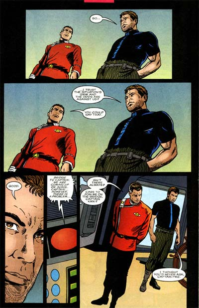

|


|
Gnese
| Episdios I Reflexes
| Palavras do autor | Palavras
do artista Star Trek
Early Voyages, n 15 abril de 1998
Histria: Dan Abnett e Ian Edginton Material produzido por Salvador Nogueira para o Trek Brasilis
Data Estelar: 9522.0 Sinopse: A Enterprise est enfrentando as naves Klingons lideradas pelo general Chang, mas as chances no esto boas. O piloto Sulu morre durante o conflito e poucas opes se abrem para Pike, quando a Excelsior chega para ajudar. Inferiorizados, os Klingons batem retirada. A capit Robbins, ex-Nmero Um de Pike, abre frequncias de saudao e comunica suas ordens de escoltar a Enterprise de volta ao espao da Federao. Somente quando Pike explica a situao, mostrando a presena da ordenana Colt, que Robbins decide deixar seu antigo capito prosseguir para Algol II, onde eles esperam restaurar a linha do tempo original, devolvendo a jovem a sua poca de origem. Enquanto Pike e Kirk finalmente fazem as pazes, aps anos de conflito, Colt e Tyler se despedem. Saavik descobre que h uma base Klingon instalada em Algol II, razo pela qual Chang estava patrulhando o setor com tanto cuidado. A princpio, Pike quer liderar o grupo de descida que acompanhar Colt superfcie, mas Kirk o convence de permanecer a bordo de sua nave, enquanto ele e sua tripulao levam Colt ao Poo dos Amanhs, onde eles esperam envi-la de volta a 2254. Chegando superfcie, o Poo se manifesta como uma entidade viva e comunica que est disposto a transportar Colt de volta ao passado, caso ela queira mergulhar por ele. A alferes toma coragem e pula. Enquanto isso, Kirk e seus comandados so obrigados a enfrentar os Klingons na superfcie. Inferiorizados, eles disputam uma batalha perdida. Scotty morre, e esse provavelmente ser o fim de todos os outros. Em rbita de Algol, a Enterprise est agonizando do mesmo modo. Cercado por foras Klingons, s resta a Pike ordenar que todos abandonem a nave. Mas essa realidade no dura muito mais, pois, com a chegada de Colt poca de onde partiu, essa linha temporal alternativa foi excluda. A alferes prepara um relato detalhado para Pike, mas o fenmeno que a transportou para o futuro em primeiro lugar nunca voltou a acontecer. Agora sim a histria vai se desenrolar como deveria, para tristeza de Pike, que observa seu futuro devastador pela pequena esfera coletada em Algol.  Comentrios Como era de se esperar, essa saga de quatro edies em uma realidade alternativa s poderia terminar com um gigantesco "reset button". Felizmente, cientes disso, Edginton e Abnett fizeram um esforo tremendo para fazer o percurso o mais divertido possvel, para compensar pelo fim previsvel. O esforo deu resultado. Como lidavam com uma linha do tempo que iria ser extinta ao final da histria, eles no hesitaram em adicionar detalhes e referncias interessantes, que agradam o leitor. divertido ver Pike falando a Kirk, em um contexto totalmente diferente, sobre o fato de s vezes "a necessidade de um sobrepujar as necessidades de muitos", um eco interessante de "Jornada nas Estrelas II: A Ira de Khan". Logo na sequncia do dilogo, temos Kirk falando: "Suponho que a situao esteja difcil e as chances estejam contra ns". A resposta imediata de Pike: "Voc poderia dizer isso". A sequncia uma citao literal do dilogo entre Kirk e Picard, em "Generations". A cena no s legal por seu prprio contedo e senso de familiaridade, mas tambm por traar um paralelo entre Pike e Picard, dois capites que parecem mesmo muito aparentados em termos de comportamento e forma de pensar. Uma boa reflexo, transmitida por uma quantidade mnima de dilogo. Alm disso, os roteiristas no desperdiaram a chance imperdvel de matar tantos personagens quantos pudessem. As duas mortes que aparecem com mais intensidade so as de Sulu, a bordo da Enterprise, e de Scotty, na superfcie do planeta. Esta ltima ainda melhor que a primeira, com o engenheiro levando um golpe de bat'leth pelas costas, diante de um perplexo Kirk. Realmente muito bem executada. Chang tambm adiciona carisma histria, mantendo seu costume de citar Shakespeare o tempo todo, e dando a entender, de forma no muito sutil, que ele tem uma dvida de vingana para com o capito Pike. Essas poucas cenas tornaram o general um arquiinimigo muito mais efetivo para Pike aqui do que para Kirk em "Jornada nas Estrelas VI: A Terra Desconhecida", embora nunca cheguemos de fato a descobrir o que Pike fez para Chang nessa linha do tempo alternativa. A concluso da histria, com Pike vislumbrando seu prprio futuro na esfera de Argol, imobilizado em uma cadeira de rodas, como visto em "The Menagerie", da Srie Clssica, simplesmente genial. Poucas vezes em quadrinhos de Jornada houve uma concluso to sombria e impactante para uma histria com final feliz. Fica aquele sabor agridoce histria que deixa o "reset button" com um sabor diferente do normal. Embora a "Histria" v seguir como deveria ser, o que supostamente algo bom, para o protagonista de Early Voyages, trata-se do fim de sua carreira --embora ainda v levar anos para isso acontecer. Relembrar isso no ltimo quadrinho foi um golpe de mestre. Graficamente, a edio bastante rica, embora Zircher no tenha tido o mesmo cuidado na hora de desenhar a Enterprise-A que teve quando trabalhou com a Enterprise clssica de Pike. Entretanto, h dois momentos verdadeiramente especiais. Um deles, j citado, o quadrinho final. O outro a passagem de Colt pelo Poo dos Amanhs, retratado com vrias imagens de Picard, Odo, Worf, Riker, o Spock do universo do Espelho, Borgs e a Deep Space Nine. Arte maravilhosa. Aps quatro edies e um delrio temporal de Abnett e Edginton que em muito se assemelhou a "Yesterday's Enterprise", finalmente voltamos primeira metade do sculo 23. Infelizmente, no por muito tempo...
|